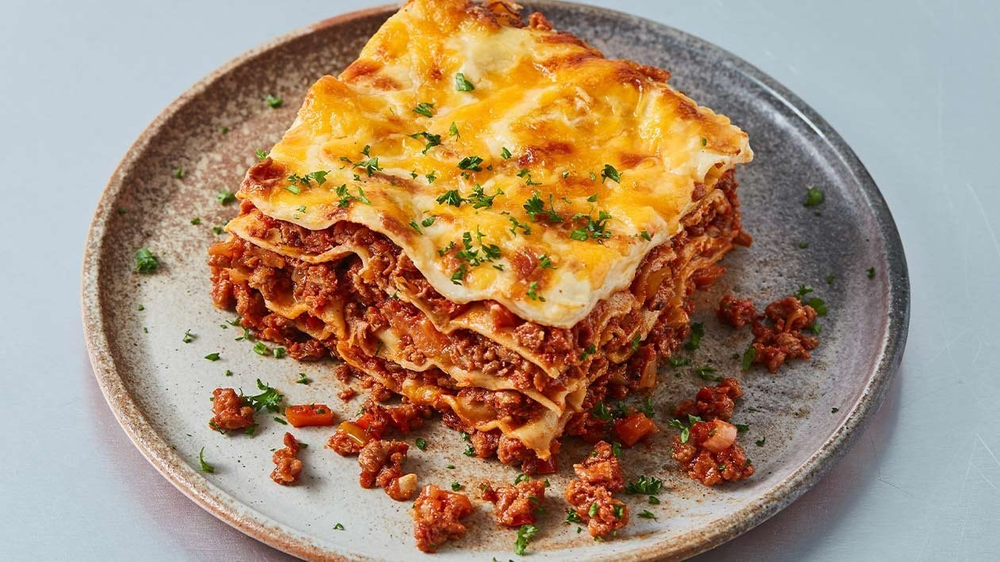

Ingredientes
- 500g de massa para lasanha
- 400g de molho de tomate
- 300g de queijo mussarela ralado
- 200g de presunto fatiado
- 200g de queijo parmesão ralado
- 1 cebola picada
- 2 dentes de alho picados
- Sal e pimenta a gosto
- Azeite para refogar
Modo de Preparo
- Pré-aqueça o forno a 180°C
- Refogue a cebola e o alho no azeite até dourar
- Adicione o molho de tomate, sal e pimenta, cozinhe por 10 minutos
- Em um refratário, monte camadas alternadas de massa, molho, presunto e mussarela
- Finalize com molho e queijo parmesão ralado por cima
- Leve ao forno por cerca de 40 minutos até gratinar
- Deixe descansar por 5 minutos antes de servir